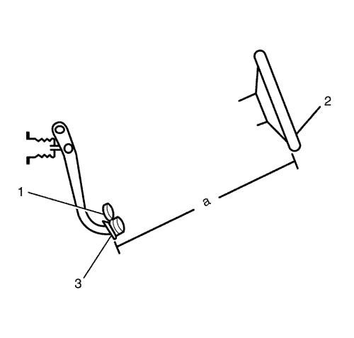
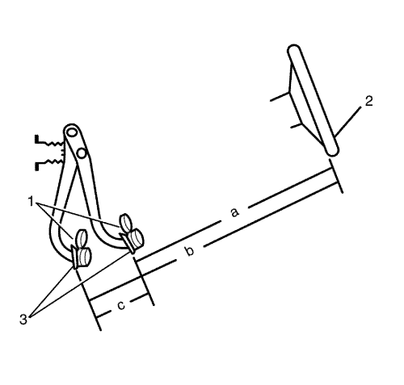

Medición y comprobación del recorrido del pedal del freno
Herramientas especiales
CH-28662 Indicador de esfuerzo del pedal del freno
Si desea informarse sobre herramientas regionales equivalentes, consultar Herramientas especiales .
- Con el encendido en OFF y los frenos fríos, presione los frenos 3-5 veces, o hasta que el pedal del freno esté firme, para reducir la reserva del servofreno.

- Monte el medidor CH-28662 (1), o un similar, en el pedal de freno (3).
- Mida y registre la distancia (a) entre el pedal de freno (3) y el borde del volante (2). Fíjese en los puntos de medición.

- Aplique y mantenga una fuerza de 445 N (100 lb) sobre el pedal de freno, según indique el medidor CH-28662 (1), o similar.
- Manteniendo la fuerza de 445 N (100 lb) sobre el pedal de freno (3), mida y registre la distancia (b) entre el mismo punto del pedal de freno (3) y el mismo punto del borde del volante(2).
- Suelte el pedal de freno (3) y repita los pasos 4 y 5 para hacer una segunda medición. Después de obtener una segunda medición, siga con el paso 7.
- Saque la media de los dos valores registrados las 2 veces que aplicó los frenos.
- Reste la distancia inicial sin el pedal pisado (a) a la distancia media con el pedal pisado (b), para obtener la medida del recorrido del pedal de freno (c).
Especificaciones
Recorrido máximo del pedal de freno - medido con el encendido DESCONECTADO, la asistencia del servofreno agotada y los frenos fríos.
| © Copyright Chevrolet. Reservados todos los derechos |